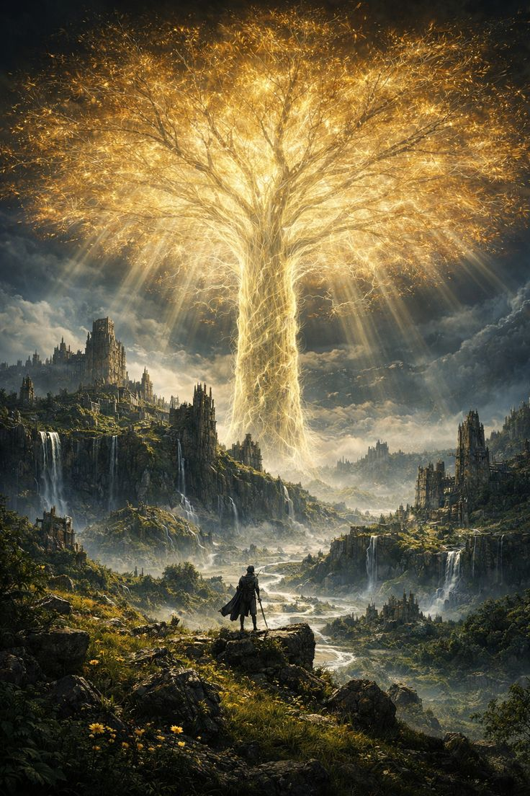
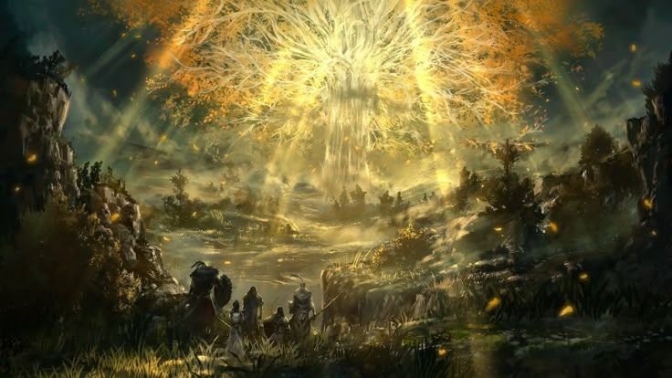
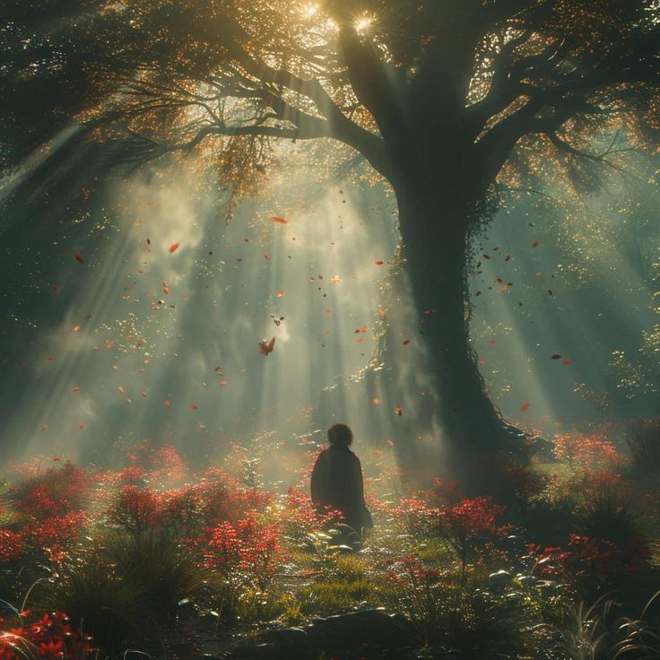
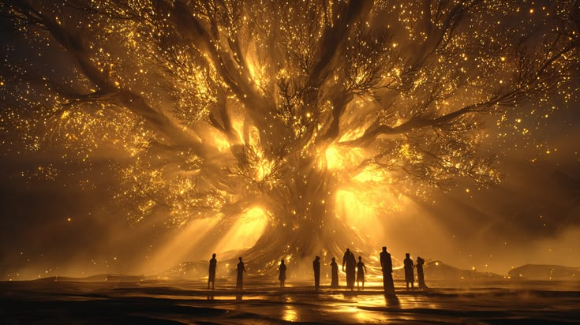

i keep going back to elden ring.
especially with the convergence mod. there is a specific kind of peace in high-fidelity open worlds that i haven't really found anywhere else. horizon zero dawn had it when you were just running through the fields watching the machines, and sekiro had it in a much more stressful, parry-heavy way, but elden ring just holds you there. it doesn't ask you to be anything other than a witness to a world that has already broken.
you're tiny in a universe that doesn't care about you, and somehow that's incredibly relaxing. when the code for arguuu isn't compiling or supabase is throwing authentication errors that make me want to throw my laptop out the window, i just load up the game. it's nice to face a boss you can actually hit with a sword instead of a bug you can't see. with the convergence mod, everything feels fresh again. the spellcasting is ridiculous, the progression feels heavy, and it gives you that raw sense of exploration that the base game had on the first night.




i'll just sit at a site of grace and watch the erdtree glow against the sky for a few minutes before moving out. there's no performance there. no deadlines. just you, a massive map, and a bunch of things trying to kill you. sometimes that's exactly what you need to recalibrate.
the convergence mod specifically does something interesting to the world. it adds classes and mechanics that feel like they belong. it doesn't feel like a mod. it feels like a version of the game you just hadn't found yet. i've been running a spellblade build that uses ice magic and close-range weapon arts, and the decision-making in combat feels different. more alive.
i think what these open world games actually give me is permission to be slow. to move through a world without optimizing. to stop at a cliffside not because there's a reason to stop but because the light is doing something interesting and i want to look at it. that's not something i do in real life very often. but in elden ring i do it constantly.
← Back to Blog